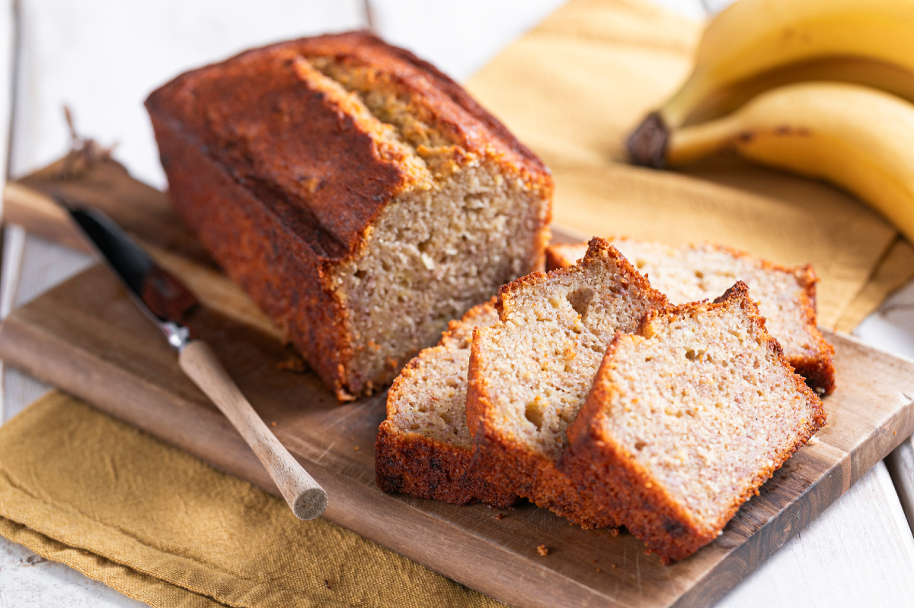

Grampa’s Famous Banana Bread
Simple yet delicious banana bread for the family to enjoy. This was one of the very first recipes Grandpa passed down to us. Known for it’s delicious taste, soft feel and being made with love. Now, we share this recipe with you!
Ingredients
- 2 ⅓ cups mashed overripe bananas
- ¼ teaspoon salt
- 1 teaspoon baking soda
- 2 cups all-purpose flour
- ½ cup butter
- 2 large beaten eggs
- ¾ cup brown sugar
Steps
- Gather all your ingredients and preheat the oven to 350° F (175° C). Lightly grease a 9x5-inch loaf pan.
- Combine flour, baking soda, and salt in a large bowl. Beat brown sugar and butter with an electric mixer in a separate large bowl until smooth. Stir in eggs and mashed bananas until well blended. Stir banana mixture into flour mixture until just combined.
- Pour batter into the prepared loaf pan.
- Bake in the preheated oven until a toothpick inserted into the center comes out clean, about 60 minutes.
- Let bread cool in pan for 10 minutes, then turn out onto a wire rack to cool completely.
- Dig in!